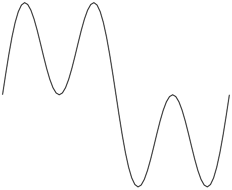
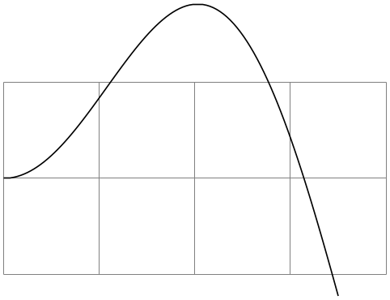

The TikZ and PGF Packages
Manual for version 3.1.9a
The Basic Layer
111 Creating Plots
This section describes the plot module.
\usepgfmodule{plot} % LaTeX and plain TeX and pure pgf
\usepgfmodule[plot] % ConTeXt and pure pgf
This module provides a set of commands that are intended to make it reasonably easy to plot functions using pgf. It is loaded automatically by pgf, but you can load it manually if you have only included pgfcore.
111.1 Overview¶
There are different reasons for using pgf for creating plots rather than some more powerful program such as gnuplot or mathematica, as discussed in Section 22.1. So, let us assume that – for whatever reason – you wish to use pgf for generating a plot.
pgf (conceptually) uses a two-stage process for generating plots. First, a plot stream must be produced. This stream consists (more or less) of a large number of coordinates. Second a plot handler is applied to the stream. A plot handler “does something” with the stream. The standard handler will issue line-to operations to the coordinates in the stream. However, a handler might also try to issue appropriate curve-to operations in order to smooth the curve. A handler may even do something else entirely, like writing each coordinate to another stream, thereby duplicating the original stream.
Both for the creation of streams and the handling of streams different sets of commands exist. The commands for creating streams start with \pgfplotstream, the commands for setting the handler start with \pgfplothandler.
111.2 Generating Plot Streams¶
111.2.1 Basic Building Blocks of Plot Streams¶
A plot stream is a (long) sequence of the following commands:
-
1. \pgfplotstreamstart,
-
2. \pgfplotstreampoint,
-
3. \pgfplotstreampointoutlier,
-
4. \pgfplotstreampointundefined,
-
5. \pgfplotstreamnewdataset,
-
6. \pgfplotstreamspecial, and
-
7. \pgfplotstreamend.
Between calls of these commands arbitrary other code may be called. Obviously, the stream should start with the first command and end with the last command. Here is an example of a plot stream:
\pgfplotstreamstart
\pgfplotstreampoint{\pgfpoint{1cm}{1cm}}
\newdimen\mydim
\mydim=2cm
\pgfplotstreampoint{\pgfpoint{\mydim}{2cm}}
\advance \mydim by
3cm
\pgfplotstreampoint{\pgfpoint{\mydim}{2cm}}
\pgfplotstreamend
Streams are global, meaning that they are not influenced by TeX groups.
\pgfplotstreamstart ¶
This command signals that a plot stream starts. The effect of this command is to call the internal command \pgf@plotstreamstart, which is set by the current plot handler to do whatever needs to be done at the beginning of the plot. It will also reset the meaning of the internal commands like \pgf@plotstreampoint to the initial setting for the plot handler (what this means will be explained in a moment).
\pgfplotstreampoint{⟨point⟩} ¶
This command adds a ⟨point⟩ to the current plot stream. The effect of this command is to call the internal command \pgf@plotstreampoint, which is also set by the current plot handler. This command should now “handle” the point in some sensible way. For example, a line-to command might be issued for the point.
When a plot handler is installed, it will setup the internal command \pgf@plotstreampoint in some way. It is permissible to change the meaning of this internal command during a stream. For instance, a handler might setup \pgf@plotstreampoint in some sensible way for the first point and then redefine it so that subsequent points are handled in some other way.
As mentioned earlier, the \pgfplotstreamstart will always reset the definition of the internal command to the initial meaning it had when the handler was installed. This is true for the other commands mentioned in the following.
\pgfplotstreampointoutlier{⟨point⟩} ¶
An outlier is a point that is “out of bounds” in some way. For instance, it might have very large coordinates or the coordinates might just be outside some specified range. Nevertheless, an outlier is still a well-defined point. This command is issued, for instance, by gnuplot when a value is outside the specified range.
You can configure how outliers are treated using the following key:
/pgf/handle outlier points in plots=⟨how⟩ (no default, initially jump) ¶
alias /tikz/handle outlier points in plots
You can set ⟨how⟩ to one of the following values:
• plot This will cause the outlier to be drawn normally, just as if \pgfplotstreampoint had been used rather than this command. • ignore The outlier will be completely ignored, just as if the command had not been used at all. • jump This causes the internal macro \pgf@plotstreamjump to be called. A “jump” in a stream is a position where a “gap” is introduced. For instance, a simple line-to plot handler will stop the current subpath at a jump position and begin with a move-to operation at the next normal point of the stream. The net effect of this setting is that at outlier points plots get interrupted and “restarted” when the points are no longer outliers. This is usually the behavior you will be looking for.
\pgfplotstreampointundefined ¶
This command indicated that the stream contains an “undefined” point like a point where some coordinate results for a division by zero. Such a point cannot be plotted, which is why it is not given as a parameter. However, such a point can result in a jump in the plot, depending on the setting of the following key:
/pgf/handle undefined points in plots=⟨how⟩ (no default, initially jump) ¶
alias /tikz/handle undefined points in plots
You can set ⟨how⟩ to one of the following values:
• ignore The undefined point will be completely ignored, just as if the command had not been used at all. • jump This causes the internal macro \pgf@plotstreamjump to be called.
\pgfplotstreamnewdataset ¶
This command indicated that in the stream a “new data set” starts. So, the stream does not end, but there is a logical break in the data. For example, when a table is read from a file, empty lines are interpreted as indicating new data sets. What happens when a new data set is encountered is governed by the following key:
/pgf/handle new data sets in plots=⟨how⟩ (no default, initially jump) ¶
alias /tikz/handle new data sets in plots
You can set ⟨how⟩ to one of the following values:
• ignore The command will be completely ignored, just as if the command had not been used at all. • jump This causes the internal macro \pgf@plotstreamjump to be called.
\pgfplotstreamspecial{⟨text⟩} ¶
This command causes \pgf@plotstreamspecial to be called with ⟨text⟩ as its parameter. This allows handler-specific information to be passed to the handler. All normal handlers ignore this command.
\pgfplotstreamend ¶
This command signals that a plot stream ends. It calls \pgf@plotstreamend, which should now do any necessary “cleanup”.
Note that plot streams are not buffered, that is, the different points are handled immediately. However, using the recording handler, it is possible to record a stream.
111.2.2 Commands That Generate Plot Streams¶
Plot streams can be created “by hand” as in the earlier example. However, most of the time the coordinates will be produced internally by some command. For example, the \pgfplotxyfile reads a file and converts it into a plot stream.
\pgfplotxyfile{⟨filename⟩} ¶
This command will try to open the file ⟨filename⟩. If this succeeds, it will convert the file contents into a plot stream as follows: A \pgfplotstreamstart is issued. Then, for each empty line a \pgfplotstreamnewdataset is produced. Other lines in the file should start with two numbers separated by a space, such as 0.1 1 or 100 -.3. The numbers may be followed by some text, which will be ignore except if it is exactly “u” or “o”. For “u” the point is considered to be undefined and \pgfplotstreampointundefined is called. For “o” the point is considered to be an outlier and \pgfplotstreampointoutlier is called. Otherwise, each pair ⟨x⟩ and ⟨y⟩ of numbers is converted into one plot stream point in the \(xy\)-coordinate system. Thus, a line like
is turned into
(Note that the last line is not an outlier because oo is not the same as o).
The two characters % and # are also allowed in a file and they are both treated as comment characters. Thus, a line starting with either of them is treated as empty.
When the file has been read completely, \pgfplotstreamend is called.
\pgfplotxyzfile{⟨filename⟩} ¶
This command works like \pgfplotxyfile, only three numbers are expected on each non-empty line. They are converted into points in the \(xyz\)-coordinate system. Consider, the following file:
It is turned into the following stream:
Currently, there is no command that can decide automatically whether the \(xy\)-coordinate system should be used or whether the \(xyz\)-system should be used. However, it would not be terribly difficult to write a “smart file reader” that parses coordinate files a bit more intelligently.
\pgfplotfunction{⟨variable⟩}{⟨sample list⟩}{⟨point⟩} ¶
This command will produce coordinates by iterating the ⟨variable⟩ over all values in ⟨sample list⟩, which should be a list in the \foreach syntax. For each value of ⟨variable⟩, the ⟨point⟩ is evaluated and the resulting coordinate is inserted into the plot stream.

\begin{tikzpicture}[x=3.8cm/360]
\pgfplothandlerlineto
\pgfplotfunction{\x}{0,5,...,360}{\pgfpointxy{\x}{sin(\x)+sin(3*\x)}}
\pgfusepath{stroke}
\end{tikzpicture}

\begin{tikzpicture}[y=3cm/360]
\pgfplothandlerlineto
\pgfplotfunction{\y}{0,5,...,360}{\pgfpointxyz{sin(2*\y)}{\y}{cos(2*\y)}}
\pgfusepath{stroke}
\end{tikzpicture}
Be warned that if the expressions that need to evaluated for each point are complex, then this command can be very slow.
\pgfplotgnuplot[⟨prefix⟩]{⟨function⟩} ¶
This command will “try” to call the gnuplot program to generate the coordinates of the ⟨function⟩. In detail, the following happens:
This command works with two files: ⟨prefix⟩.gnuplot and ⟨prefix⟩.table. If the optional argument ⟨prefix⟩ is not given, it is set to \jobname.
Let us start with the situation where none of these files exists. Then pgf will first generate the file ⟨prefix⟩.gnuplot. In this file it writes
where #1 is replaced by ⟨prefix⟩. Then, in a second line, it writes the text ⟨function⟩.
Next, pgf will try to invoke the program gnuplot with the argument ⟨prefix⟩.gnuplot. This call may or may not succeed, depending on whether the \write18 mechanism (also known as shell escape) is switched on and whether the gnuplot program is available.
Assuming that the call succeeded, the next step is to invoke \pgfplotxyfile on the file ⟨prefix⟩.table; which is exactly the file that has just been created by gnuplot.

\begin{tikzpicture}
\draw[help lines] (0,-1) grid
(4,1);
\pgfplothandlerlineto
\pgfplotgnuplot[plots/pgfplotgnuplot-example]{plot
[x=0:3.5] x*sin(x)}
\pgfusepath{stroke}
\end{tikzpicture}
The more difficult situation arises when the .gnuplot file exists, which will be the case on the second run of TeX on the TeX file. In this case pgf will read this file and check whether it contains exactly what pgf “would have written” into this file. If this is not the case, the file contents is overwritten with what “should be there” and, as above, gnuplot is invoked to generate a new .table file. However, if the file contents is “as expected”, the external gnuplot program is not called. Instead, the ⟨prefix⟩.table file is immediately read.
As explained in Section 22.6, the net effect of the above mechanism is that gnuplot is called as seldom as possible and that when you pass along the .gnuplot and .table files with your .tex file to someone else, that person can TeX the .tex file without having gnuplot installed and without having the \write18 mechanism switched on.
/pgf/plot/gnuplot call=⟨gnuplot invocation⟩ (no default, initially gnuplot) ¶
This key can be used to change the way gnuplot is called.
Some portable MiKTeX distribution needs something like the following.
\pgfkeys{/pgf/plot/gnuplot call="/Programs/gnuplot/binary/gnuplot"}
111.3 Plot Handlers¶
A plot handler determines what “should be done” with a plot stream. You must set the plot handler before the stream starts. The following commands install the most basic plot handlers; more plot handlers are defined in the file pgflibraryplothandlers, which is documented in Section 65.
All plot handlers work by setting or redefining the following three macros: \pgf@plotstreamstart, \pgf@plotstreampoint, and \pgf@plotstreamend.
\pgfplothandlerlineto ¶
This handler will issue a \pgfpathlineto command for each point of the plot, except possibly for the first. What happens with the first point can be specified using the two commands described below.
\begin{pgfpicture}
\pgfpathmoveto{\pgfpointorigin}
\pgfplothandlerlineto
\pgfplotstreamstart
\pgfplotstreampoint{\pgfpoint{1cm}{0cm}}
\pgfplotstreampoint{\pgfpoint{2cm}{1cm}}
\pgfplotstreampoint{\pgfpoint{3cm}{2cm}}
\pgfplotstreampoint{\pgfpoint{1cm}{2cm}}
\pgfplotstreamend
\pgfusepath{stroke}
\end{pgfpicture}
\pgfsetmovetofirstplotpoint ¶
Specifies that the line-to plot handler (and also some other plot handlers) should issue a move-to command for the first point of the plot instead of a line-to. This will start a new part of the current path, which is not always, but often, desirable. This is the default.
\pgfsetlinetofirstplotpoint ¶
Specifies that plot handlers should issue a line-to command for the first point of the plot.

\begin{pgfpicture}
\pgfpathmoveto{\pgfpointorigin}
\pgfsetlinetofirstplotpoint
\pgfplothandlerlineto
\pgfplotstreamstart
\pgfplotstreampoint{\pgfpoint{1cm}{0cm}}
\pgfplotstreampoint{\pgfpoint{2cm}{1cm}}
\pgfplotstreampoint{\pgfpoint{3cm}{2cm}}
\pgfplotstreampoint{\pgfpoint{1cm}{2cm}}
\pgfplotstreamend
\pgfusepath{stroke}
\end{pgfpicture}
\pgfplothandlerpolygon ¶
This handler works like the line-to plot handler, only the line is closed at the end using \pgfpathclose, resulting in a polygon.
\pgfplothandlerdiscard ¶
This handler will simply throw away the stream.
\pgfplothandlerrecord{⟨macro⟩} ¶
When this handler is installed, each time a plot stream command is called, this command will be appended to ⟨macro⟩. Thus, at the end of the stream, ⟨macro⟩ will contain all the commands that were issued on the stream. You can then install another handler and invoke ⟨macro⟩ to “replay” the stream (possibly many times).
\begin{pgfpicture}
\pgfplothandlerrecord{\mystream}
\pgfplotstreamstart
\pgfplotstreampoint{\pgfpoint{1cm}{0cm}}
\pgfplotstreampoint{\pgfpoint{2cm}{1cm}}
\pgfplotstreampoint{\pgfpoint{3cm}{1cm}}
\pgfplotstreampoint{\pgfpoint{1cm}{2cm}}
\pgfplotstreamend
\pgfplothandlerlineto
\mystream
\pgfplothandlerclosedcurve
\mystream
\pgfusepath{stroke}
\end{pgfpicture}
111.4 Defining New Plot Handlers¶
You can define new plot handlers using the following command:
\pgfdeclareplothandler{⟨macro⟩}{⟨arguments⟩}{⟨configuration⟩} ¶
This command creates a new plot handler that can subsequently be called using the macro ⟨macro⟩. This macro take the arguments given in ⟨arguments⟩, which can be a list like #1#2 if ⟨macro⟩ should be invoked with two arguments. Here is a typical example:
\pgfdeclareplothandler{\myhandler}{#1}{...}
...
\myhandler{foo}
\pgfplotstreamstart
...
\pgfplotstreamend
The ⟨configuration⟩ is used to define the behavior of the handler. It is a list of key–value pairs, where the following keys are allowed:
• start=⟨code⟩. The ⟨code⟩ will be executed whenever \pgfplotstreamstart is used while the handler ⟨macro⟩ is selected. Inside the ⟨code⟩, you can use #1, #2, and so on to refer to the parameters that were given to ⟨macro⟩:
Hi foo.Bye foo.Hi bar.Bye bar.
\pgfdeclareplothandler{\myhandler}{#1}{
start
=
Hi
#1.,
end
=
Bye
#1.,
}
\myhandler{foo}
\pgfplotstreamstart
\pgfplotstreamend
\myhandler{bar}
\pgfplotstreamstart
\pgfplotstreamend
• end=⟨code⟩ Works just like start.
• point=⟨code⟩. The ⟨code⟩ will be executed whenever \pgfplotstreampoint is used while the handler ⟨macro⟩ is in force. Inside the ⟨code⟩, you can use #1, #2, and so on to refer to the arguments give to ⟨macro⟩, while you can use ##1 to refer to the argument given to \pgfplotstreampoint itself (this will be the coordinate).
\pgfdeclareplothandler{\myhandler}{#1}{
point=\pgfpathcircle{##1}{#1} % ##1 is the coordinate,
% #1 the parameter for \myhandler
}
\begin{pgfpicture}
\myhandler{1pt}
\pgfplotstreamstart
\pgfplotstreampoint{\pgfpoint{0pt}{0pt}}
\pgfplotstreampoint{\pgfpoint{3pt}{3pt}}
\pgfplotstreampoint{\pgfpoint{6pt}{3pt}}
\pgfplotstreampoint{\pgfpoint{9pt}{0pt}}
\pgfplotstreamend
\pgfusepath{stroke}
\myhandler{3pt}
\pgfplotstreamstart
\pgfplotstreampoint{\pgfpoint{0pt}{0pt}}
\pgfplotstreampoint{\pgfpoint{9pt}{0pt}}
\pgfplotstreamend
\pgfusepath{stroke}
\end{pgfpicture}
The ⟨code⟩ will also be called for \pgfplotstreampointoutlier when this command has been configured to plot the outliers.
• jump=⟨code⟩ The ⟨code⟩ will be called whenever a jump has been requested indirectly via an outlier point, and undefined point, or a new data set (for each of which the command needs to be configured to jump). As always, inside the ⟨code⟩ you can access #1 and so on.
• special=⟨code⟩ Causes ⟨code⟩ to be executed whenever \pgfplotstreamspecial{⟨something⟩} is used. Inside the ⟨code⟩, you can access ⟨something⟩ via ##1 and the parameters of ⟨macro⟩ as #1, #2, and so on.
In addition to the above keys, there exist also “code macro versions” of them:
• point macro=⟨some macro⟩. Causes \pgfplotstreampoint to call ⟨some macro⟩ directly (actually, \pgf@plotstreampoint is set to be equal to ⟨some macro⟩). Inside the ⟨some macro⟩ you can use #1 to access the coordinate passed to \pgfplotstreampoint and you can no longer access the parameters passed to the original call to ⟨macro⟩ that installed the handler. So, ⟨some macro⟩ must take exactly one argument, namely #1.
• special macro=⟨some macro⟩. As point macro, only for specials.
• start macro=⟨some macro⟩. Causes ⟨some macro⟩ to be executed at the start. This macro, like the below ones, may not take any parameters and will not have access to the parameters passed to the original ⟨macro⟩.
• end macro=⟨some macro⟩. As above.
• jump macro=⟨some macro⟩. As above.